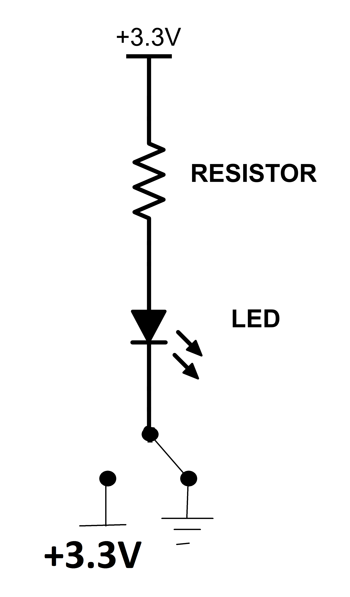

The most common use for having your software control your hardware is to turn components on and off (like and LED or any other device that can turn on or off). And the most common use for having your hardware communicate with your software is indicate that an event has occurred (like a button being pressed) or to relay the status of something external (for example, if it's getting hot outside and a thermometer needs to tell the software that we've reached a certain temperature).
Understanding how this communication and control works is the key to being able to develop software and hardware that works together to build valuable and interesting devices. As it turns out, there is a relatively simple mechanism for how to get these two things to work together, and it's called General Purpose Input/Output, or GPIO for short. GPIOs are physically located between your circuit (on your breadboard) and your software (running on the Raspberry Pi):
In the next section, we'll give a brief overview of what GPIOs physically are, and then after that, we'll talk about how they work and how you can use them in your projects. Then, we'll use these concepts in most of our future projects in order to create some awesome stuff.
What Are GPIOs?
GPIOs are specific pins (little metal "legs" on the bottom or sides of a computer chip) that provide a connection between a physical circuit and the software inside the chip. We make these connections to the computer chip available on the RaspberrySTEM CREATOR Kit by plugging wires into the Lid Connector Board holes. GPIOs are like the nerve-system of the platform – their job is to relay signals from the brain (the Raspberry Pi computer) to the muscles (the components of the circuit) and to take signals from the muscles and relay them back to the brain.
The Raspberry Pi has 26 GPIOs, each of which are referenced by number (for example, GPIO17), and each pin (hole) on the Lid Connector Board is labeled with the GPIO it is connected to. So, if you want to hook up a component to GPIO17, you'll insert a wire from the component to the hole on the Lid Connector Board labeled "17".
The Lid Connector Board was designed to make connecting to the Raspberry Pi pins cleaner and easier. In fact, the whole purpose of the ribbon cable and the Lid Connector Board is simply to bring the GPIO pins (and other pins) from the Raspberry Pi to the RaspberrySTEM Lid, where they are easier for you to attach your components to.
But, if you had a Raspberry Pi computer without the RaspberrySTEM CREATOR Kit, you'd still be able to get access to the Raspberry Pi GPIOs. The GPIOs are made available through the pins on the Raspberry Pi (the pins that the ribbon cable is attached to). If you were to remove the ribbon cable, you could connect wires directly to the Raspberry Pi GPIO pins and attach them to the breadboard (or to your components) directly.
How Do GPIOs Work
While GPIOs all look the same, there are actually two different ways that they can be used in your electronic projects. You may remember from above that there are two important uses for GPIOs -- allowing your software to control your hardware and allowing your hardware to communicate with your software:
A GPIO can do either of these two things, but not at the same time. You must decide beforehand whether a GPIO is going to be used to allow software to control hardware or whether it will be used to allow hardware to communicate with software. Once you make that decision, you will "configure" the GPIO to perform that task. By configure, we just mean that you will write a tiny bit of code that tells the GPIO which of the two functions it will perform.
When we configure a GPIO to allow software to control hardware, we say that we're "using the GPIO as an output":
And when we configure a GPIO to allow hardware to communicate with software, we say that we're "using the GPIO as an input":
Now that we have a basic definition of GPIOs and how they can be used as either outputs (to allow your software to control your hardware) or as inputs (to allow your hardware to communicate with your software), let's talk in more detail about how GPIOs work in each of these situations.
GPIOs as Outputs
The first part of our discussion will focus on how your code can control your circuit. This is important because you often want to have your circuit react to things happening in your code or decisions that your code has made. To understand this concept, we'll need to think back to a previous discussion about how and why electric current flows through a circuit.
If you recall from our earlier discussion in INTRODUCTION TO ELECTRONICS, electric current will only flow through a circuit when there is a voltage differential between the beginning and the end of the circuit.
This is why, for our basic LED circuit, the LED will illuminate when we attach one side of the circuit to 3.3V power and the other side to ground. Like this:
Given that, it should also make sense that, if there is no voltage differential between the beginning and the end of a circuit, no current will flow. For example, imagine our circuit above, but instead of attaching the end of the circuit to ground, we attach it to 3.3V power, just like the beginning of the circuit.
The circuit would look like this:

And as you can probably guess, no current would flow and the LED would not illuminate.
Now, imagine that we wire a circuit where the end of the circuit has a switch. And that switch can be toggled between connecting to power and connecting to ground. It might look a little something like this:
Based on what we discussed above, it should be clear that when the switch is toggled to power, no current will flow through the circuit. And when the switch is toggled to ground, current will flow through the circuit:
|  | |
| GPIO Attached To Power (LED Off) | GPIO Attached to Ground (LED On) |
When the circuit is configured like the left-hand circuit above, no current is flowing and the LED does not illuminate. But, when the circuit is configured like the right-hand circuit above, current will flow and the LED will illuminate.
It turns out that there is a component that does exactly this, and it's part of the Raspberry Pi. Using software, we can control how the switch is toggled, and we can force a physical connection to either power or ground. This component is called a General Purpose Input/Output (GPIO). And this is one way computers allow us to control hardware through software.
Here is a schematic representation of a GPIO:
But remember, what's going on inside that GPIO box is what we represented above -- it is essentially a switch that can be toggled to power or to ground (through software), allowing circuit to either not flow (when toggled to power) or to flow (when toggled to ground).
And this -- using GPIOs as Outputs -- is how our code can control our circuit. In the next section, we'll talk about going in the other direction -- specifically, how our circuit can communicate with our code.
In the electronics world, we often use the term "low" to refer to ground. You might hear an engineer say something like, "Tie that component low," or "Set that pin low." That simply means to connect whatever is being referred to to ground.
It's interesting -- and sometimes confusing -- to think about the fact that when a GPIO is set low (attached to ground), the current is flowing and the circuit is working. And when a GPIO is set high (attached to power), current stops flowing. We tend to think of something working when it's attached to power, not ground. But remember, the other side of the circuit is still attached to power, and it's the differential that creates the current flow.
This is why you'll sometimes hear engineers use the term "Active Low." It indicates that the GPIO needs to be set low (to ground) for the circuit to be active.
GPIOs as Inputs
The first part of our GPIO discussion focused on how we could control our circuit from our code (GPIO as Outputs). The next part of our discussion will focus on how our circuit can communicate with our code. This is important because we often want to trigger our code to do certain things or take certain actions based on input or changes coming from our circuit.
Remember back to the WORKING WITH BUTTONS project, where we inserted a button into the circuit to act as a physical switch -- when pressed, the circuit was completed and when released, the circuit was open. No software was required.
But when our hardware can communicate directly with our code, we open a world of possibilities. For example, imagine that instead of wiring the button into our circuit without software, we instead wire our button so that it can communicate with our code. This would allow us to do something such as count how many times a button is pressed in a certain time period, and take different actions based on that number? Or perhaps we want to time how long a button is pressed and take action based on the length of the press? Or maybe a button press needs to trigger an action in another component (or even another circuit!) that the button isn't attached to?
This is all possible when our button can communicate directly with our code. And this is done by using GPIOs in inputs. Much like GPIO outputs work by simply setting a voltage on the GPIO pin to either ground (0V) or power (3.3V), GPIO inputs work by reading the voltage -- either 0V or 3.3V -- being sent to the GPIO pin.
For example, a GPIO can be used to get the current state of a button or switch (pressed or released). Based on the current state, the software can do what we expect when the button/switch is in that state.
"State" is a common term using in electronics and just means the current condition or situation of a component or circuit. For example, in the case of a button or switch, state would refer to whether the button is currently being pressed or released. For an LED, state might refer to whether the LED was illuminated or not.
For a component to communicate with our code, instead of wiring the component directly into the rest of the circuit, we instead wire the component directly to a GPIO. Typically, a component wired to a GPIO input would either generate 0V or 3.3V and the GPIO input would read that voltage and communicate it to our code -- hence the code knows about the "state" of the component.
Buttons are a little bit different, as they don't generate a voltage. But, with a little bit of behind-the-scenes configuration, we can wire a circuit so that our button can be used as a GPIO input and we can read the state of the button based on the voltages generated.
This is what the schematic would look like for a button wired to a GPIO as an input:
This circuit works by defaulting the GPIO voltage to 3.3V. When the button is unpressed (circuit open), the GPIO reads the default 3.3V. When the button is pressed, the circuit is closed, the GPIO gets pulled low (to ground), and will read 0V. This way, the code can measure the voltage at the GPIO and know if the button is pressed (0V at GPIO) or unpressed (3.3V at GPIO).